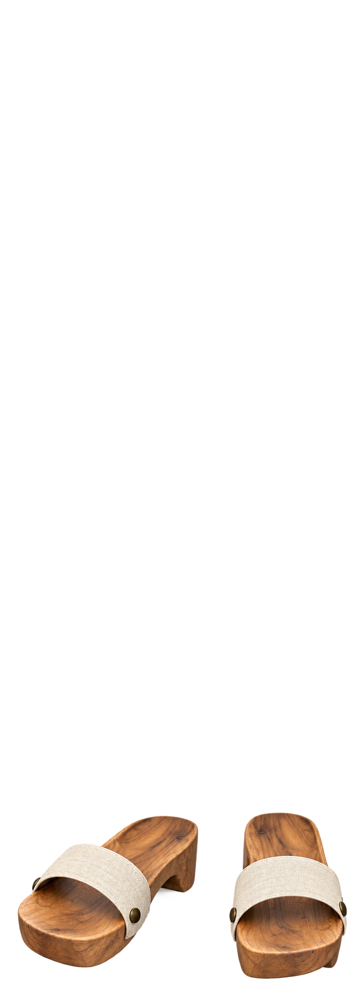
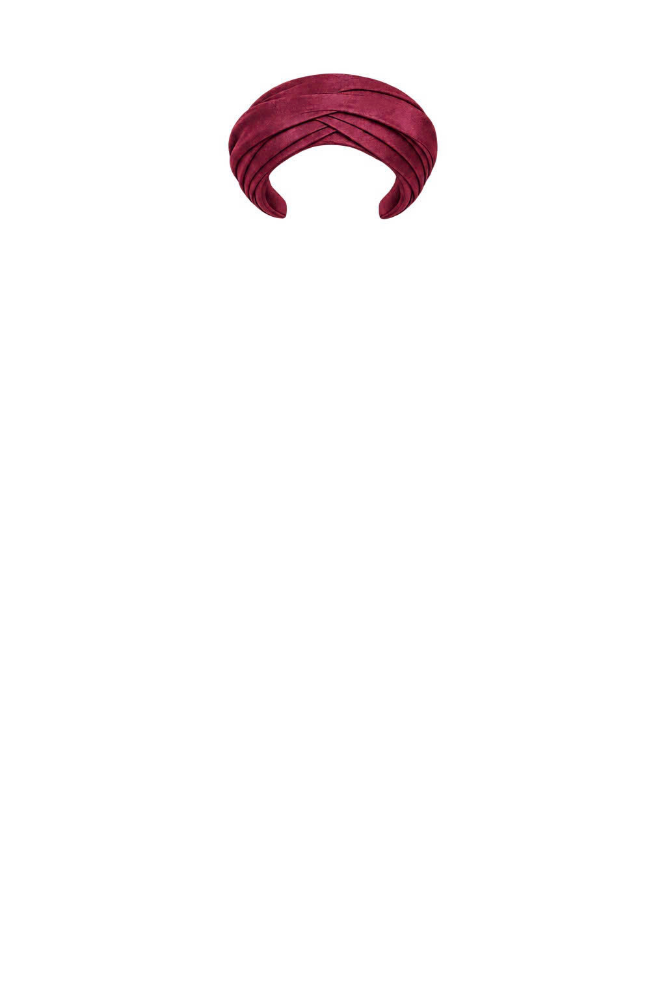
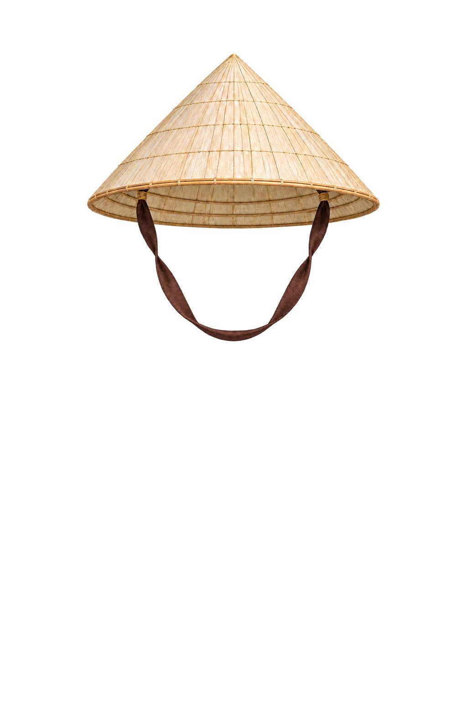
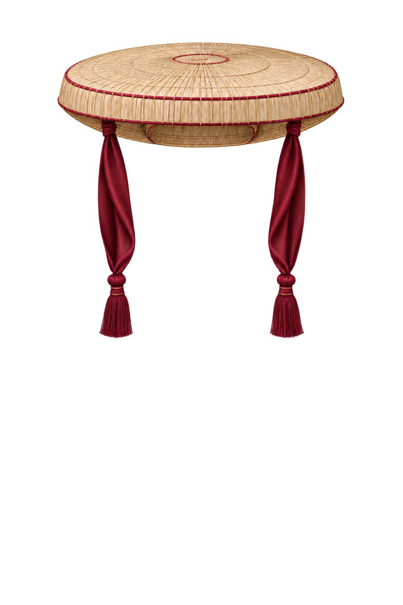

15 ảnh nguồn trong assets
Trang kiểm kê ảnh gốc, chưa tích hợp catalog. 12 PNG có alpha và 3 JPG nền trắng.
Áo dài hiện là aodai-fit-body2.png; đã thêm quan-aodai-fit-body2.png. Bấm ảnh để xem nguồn nguyên canvas. Cấu hình fit được lưu riêng, chỉ đổi kích thước và vị trí.

1. Áo bà ba
assets/aobaba.png755×2084 · slot outer
PNG áo riêng, tay phải đã gập. Khung gần tỉ lệ body nữ; còn viền trắng/đỏ cần xem khi fit.

2. Áo dài trắng
assets/aodai-fit-body2.png756×2080 · slot outer
Áo riêng trên canvas body nữ. File aodai.png đã bỏ; dùng aodai-fit-body2.png. Căn bằng kích thước và vị trí theo ảnh tham chiếu người dùng, giữ hình dáng áo.

3. Áo giao lĩnh
assets/aogiaolinh.png776×2025 · slot outer
PNG áo riêng, tay phải đã gập; khung gần body nam. Chưa xác nhận cổ, vai, eo và gấu đạt sai số fit 1–2%.

4. Áo ngũ thân — bản nữ
assets/aonguthan_female.png755×2084 · slot outer
PNG áo riêng, khung nữ, tay phải gập. Cần kiểm tra mốc cổ và gấu khi ghép; không coi đúng canvas là fit đạt.

5. Áo ngũ thân — bản nam
assets/aonguthan_male.png777×2025 · slot outer
PNG áo riêng, khung nam, tay phải gập. Giữ riêng biến thể nam; cần QA mốc cổ/tay/gấu.

6. Áo Nhật Bình
assets/aonhatbinh.png755×2084 · slot outer
PNG áo riêng, vùng hở cổ đã trong suốt, tay phải gập và tay áo rộng. Khung gần body nữ; cần kiểm tra cổ, vai và cổ tay.

7. Áo tứ thân
assets/aotuthan.png755×2084 · slot outer
PNG áo riêng, thân trước mở, có dây buộc eo; tay phải gập. Khung gần body nữ; cần lớp trong và kiểm tra mốc eo.

8. Áo yếm
assets/aoyiem.png755×2084 · slot outer
PNG món riêng, khung nữ. Điểm ảnh rõ trên cùng ở y≈575/2084, tương đương y≈80 trên body cao290; khác mốc cổ y≈48 của renderer, cần căn lại.

9. Guốc mộc
assets/guocmoc.png754×2084 · slot footwear
PNG đôi guốc riêng, khung gần nữ. Vùng rõ trải rộng khoảng 96 px khi quy về body rộng 105 px; cần thu và căn từng bàn chân, chưa fit đạt.

10. Khăn đóng (theo tên file)
assets/khandong.jpg1024×1536 · slot headwear
JPG nền trắng, không alpha. Cần duyệt tên khăn đóng/khăn vấn, tách nền và đặt theo đầu body ở bước tiếp theo.

11. Nón lá
assets/nonla.jpg1024×1536 · slot headwear
JPG nền trắng, không alpha, có quai nón. Chưa phải lớp toàn body; cần tách nền và kiểm tra quai quanh mặt/cổ.

12. Nón quai thao
assets/nonquaithao.jpg1024×1536 · slot headwear
JPG nền trắng, không alpha, có hai dải quai. Chưa phải lớp toàn body; cần xem góc và fit trên đầu.

13. Quần bà ba (theo tên file)
assets/quanbaba.png755×2084 · slot bottom
PNG quần riêng, khung gần nữ nhưng cạp bắt đầu khoảngy432/2084 → y60 trên body 290; vùng eo renderer khoảngy115. Cần dịch/căn lại trước khi dùng.

14. Váy đụp (theo tên file)
assets/vaydup.png1254×1254 · slot bottom
PNG váy riêng, canvas vuông1254×1254, chưa phải lớp toàn body. Cần đặt lên khung body, căn eo và gấu. Id long-skirt chỉ là đề xuất: chưa có entry trong LAYER_ITEMS.

15. Quần áo dài trắng ngà
assets/quan-aodai-fit-body2.png755×2084 · slot bottom
Ảnh mới người dùng bổ sung, canvas body nữ. Căn cạp quần và ống quần bằng scale/offset; giữ nguyên tỉ lệ món, không kéo riêng từng đoạn.
sources: [], needsVerification: true cho nội dung chưa có nguồn. Không gọi API.